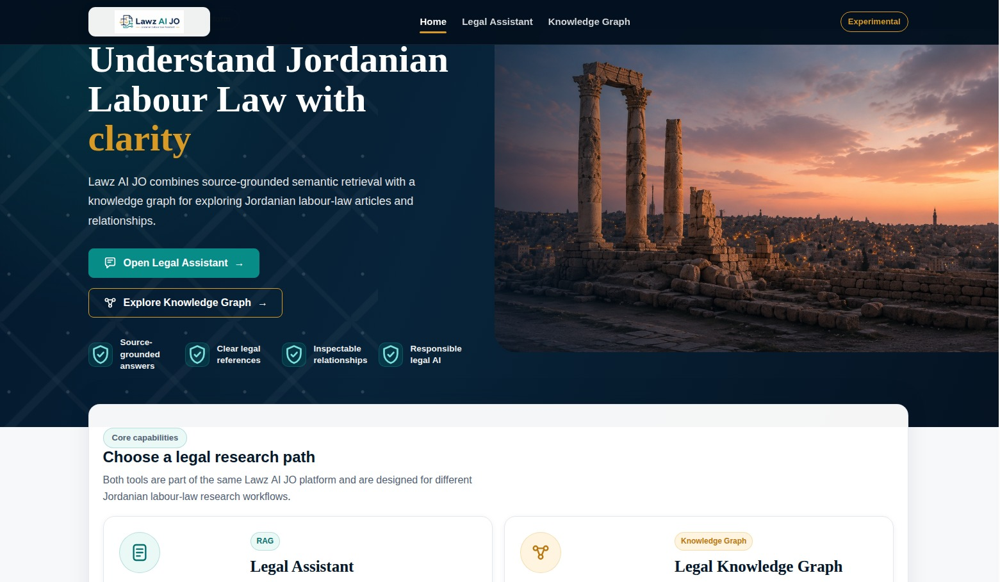
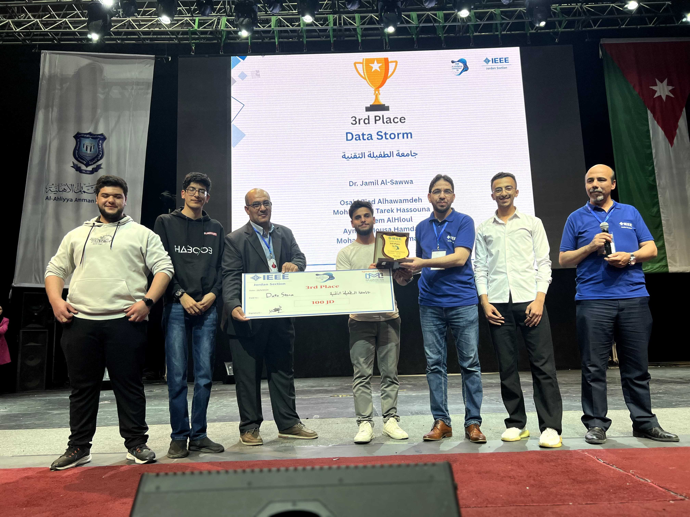
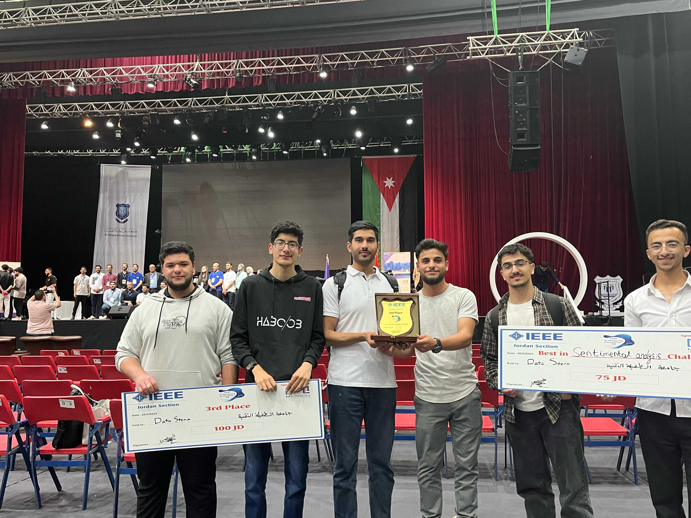
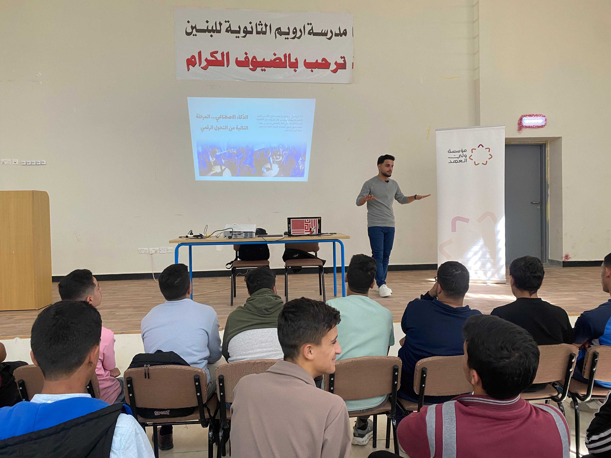
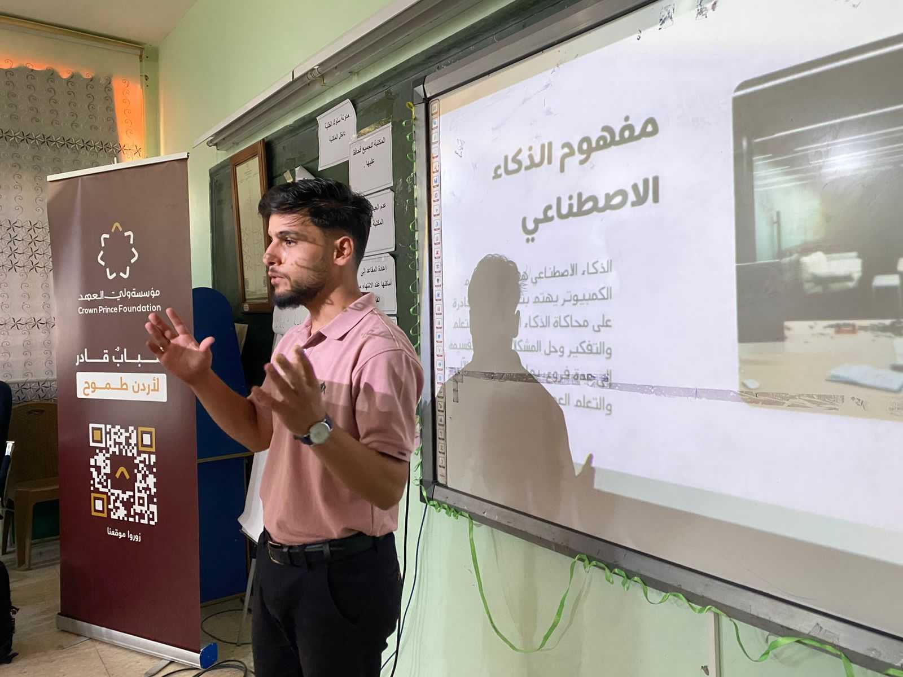
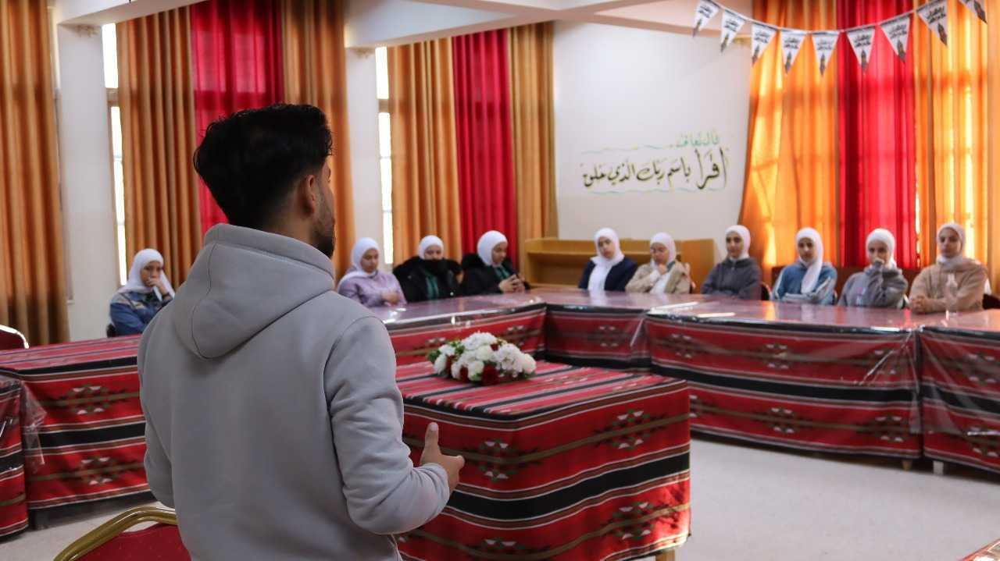

AI Engineer
Osaid Ziad Alhawamdeh
RAG & LLM Systems • Computer Vision • Cybersecurity AI
I build applied AI systems that combine machine learning, retrieval-augmented generation, computer vision, and human-centered workflows to solve real-world problems.
Applied AI Systems
Arabic RAG
Lawz AI JO
Legal evidence, grounded answers, visible citations
Vision
SentinelAI
EfficientNetB0, Bi-LSTM, real-time alerts
Prototype
PharmaGuard AI
Human-in-the-loop review and governance
Impact Metrics
Proof points from applied AI work
Featured Projects
Applied AI systems and technical case studies
Work across Arabic legal AI, RAG and LLM workflows, computer vision, cybersecurity machine learning, and human-in-the-loop AI prototypes.

Arabic Legal AI · RAG
AI.SPIRE Capstone
Lawz AI JO — Source-Grounded Legal Research Assistant
A source-grounded Arabic legal information prototype for selected Jordanian labour-law material. It retrieves local evidence, produces an initial Arabic explanation, and returns backend-generated citations for inspection.
Team project. Osaid served as Team Lead and contributed frontend development, the evaluation framework, result interpretation, cross-component QA, integration, and the final technical presentation.
Arabic RAG
Next.js
FastAPI
Weaviate
Neo4j PoC
Evaluation
Cybersecurity AI
Graduation Project
SOC Copilot — AI-Powered RAG Assistant for SOC Analysts
Graduation project and AI-powered assistant for Security Operations Center analysts. It supports alert investigation, log/file analysis, IoC and CVE context, Sigma rule conversion, and analyst-facing security workflows using RAG and LLM-based reasoning.
RAG
LLM
FastAPI
PGVector
PostgreSQL
Cybersecurity AI
SOC Workflows
Computer Vision
97.17% Accuracy
SentinelAI — Intelligent Violence Detection System
Deep learning-based violence detection system for video footage using EfficientNetB0 and Bi-LSTM to capture spatial and temporal patterns. Achieved 97.17% accuracy and 0.97 F1-score, with a real-time inference dashboard and Telegram alerts.
Computer Vision
Deep Learning
EfficientNetB0
Bi-LSTM
TensorFlow
Flask
Telegram Alerts
Healthcare AI Prototype
Prototype
PharmaGuard AI — Pharmacist-Centered AI Copilot Prototype
A pharmacist-centered AI copilot prototype for prescription intake, pharmacist correction, local RAG retrieval, knowledge-base governance, safety-rule prompts, workflow traceability, and evaluation-driven review.
Prototype disclaimer: uses synthetic data and local placeholder knowledge. It is not a medical device, not clinically validated, does not diagnose, and must never make final medical decisions.
Healthcare AI
Local RAG
OCR Intake
Knowledge Governance
Safety Rules
Workflow Traceability
Machine Learning
Regression
Car Price Predictor
Machine learning regression project for predicting car prices using structured vehicle data. Built an end-to-end pipeline and improved model score from 0.856 to 0.898 using XGBoost and GridSearchCV.
Machine Learning
Regression
XGBoost
GridSearchCV
Data Analysis
Cybersecurity ML
Case Study
Network Traffic Classification
Machine learning cybersecurity project for classifying DNS-over-HTTPS and non-DoH network traffic. Processed and engineered features from a dataset exceeding 1.1M records.
Cybersecurity
Machine Learning
Feature Engineering
Network Traffic Analysis
Case study without public repository
Technical Skills
AI engineering toolkit
Grouped around model development, applied AI systems, APIs, data infrastructure, and deployment-minded delivery.
AI & Machine Learning
Python
Machine Learning
Deep Learning
NLP
Computer Vision
RAG
LLMs
Frameworks & Libraries
TensorFlow
PyTorch
Scikit-learn
Pandas
NumPy
Hugging Face
spaCy
Backend & APIs
FastAPI
Flask
REST APIs
Data & Databases
SQL
PostgreSQL
PGVector
Weaviate
Tools & Deployment
Docker
Docker Compose
Git
GitHub
GitHub Pages
Awards & Recognition
Recognition across applied AI and entrepreneurship
Irada Tech Entrepreneurship Hackathon
IEEE Jordan AI Modeling Hackathon
Sentiment Analysis, IEEE Jordan AI Modeling Hackathon
3rd International Youth AI Forum, Egypt
Applied AI and ML Systems




AI Training & Community Impact
AI training that turns tools into practical outcomes
Delivered 20+ AI and digital-skills workshops for youth and students.
Trained participants on AI tools, digital productivity, and applied AI concepts.
Designed practical sessions that simplify complex AI concepts through hands-on examples.




About
AI Engineer focused on applied systems
Osaid is an AI Engineer and Artificial Intelligence & Data Science graduate from Tafila Technical University. His work focuses on applied AI systems, including RAG/LLM workflows, computer vision, cybersecurity AI, and human-in-the-loop AI prototypes. He has built projects such as Lawz AI JO, SOC Copilot, SentinelAI, and PharmaGuard AI, and has also delivered 20+ AI and digital-skills workshops for youth and community organizations.
B.Sc. Artificial Intelligence & Data Science • Tafila Technical University, 2026